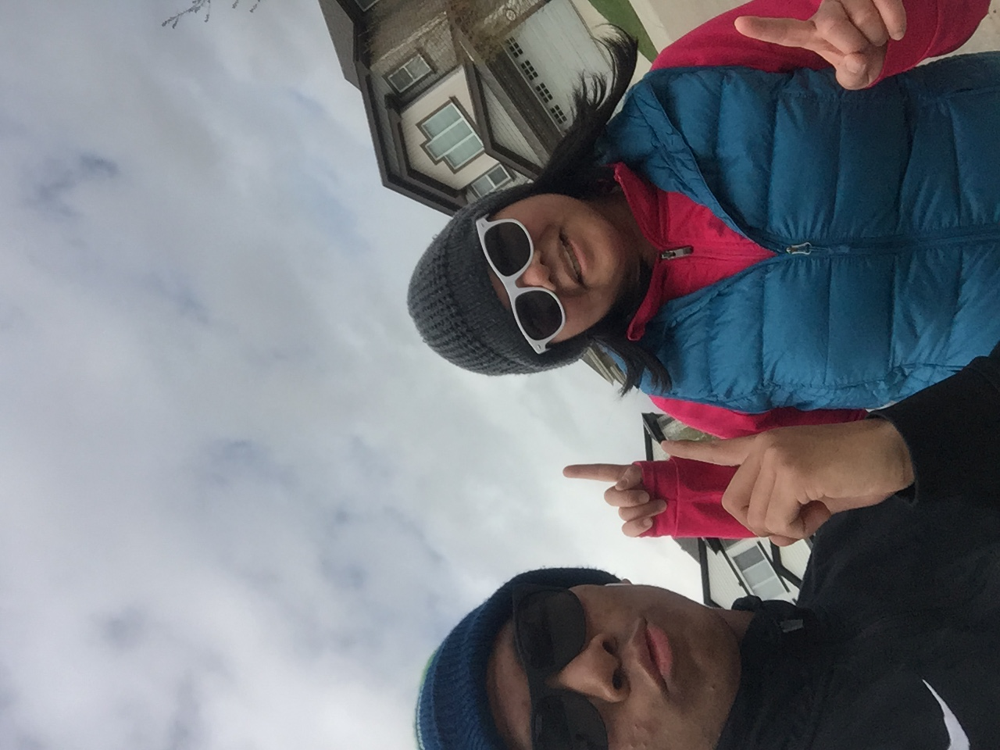

My mother was a silent leader. She was the special lady who took care of everything behind the scenes, she was the glue that kept our small, special kinship together. She had never asked for more recognition, never complained, so for that thank you for everything you do. My mother had first come to Edmonton in the year 2005 with only 500$ to her name. She had come to Edmonton to look for new opportunities and a stable job to help provide for her family. We had lived in a small humble apartment, she had gone to work everyday for the next 6 months, while my father had stayed home to take care of me. Despite being brand new to the country, speaking a language she wasn't familiar with. I was only 9 months old at this time so I cannot recall except through stories, but I cannot begin to imagine the strength it had taken my mother to work everyday with the struggles, and take care of a newborn baby in the evening. She had persevered and kept showing up for not only me, but for our whole family. I can confidently say that without these efforts I would not be the man I am today.
When watching the Tales My Kookum Told Me by New Dane Metis Women1. I felt deeply touched by their stories, the struggles and humble beginnings of their families. their mothers may not have been the wealthiest but they provided for their families while teaching them essential life lessons to be better human beings. These stories could have been overlooked and forgotten, but through sharing. Their stories about their mother keeps their mother’s essence alive. In First Nation culture there is a deep emphasis on verbal storytelling to never let these stories die as these stories have the ability to shape us and teach us valuable things. So in tradition hearing my mothers struggles and triumphs through spoken mouth made it even more special and inspiring.